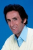

Country:United States, 99 minutes
Spoken languages:English
Genres:Adventure, Action, Comedy
Director(s):Gary Nelson
Writer(s):Gene Quintano, H. Rider Haggard, Lee Reynolds
Video Codec:Unknown
Number: 2489


Certification:PG
Storyline:
After his brother Robeson disappears without a trace while exploring Africa in search of a legendary 'white tribe', Allan Quatermain decides to follow in his footsteps to learn what became of him. Soon after arriving, he discovers the Lost City of Gold, controlled by the evil lord Agon, and mined by his legions of white slaves.
Cast: 


Medium: Unknown,
Loaned: No
Aspect ratio: Unknown